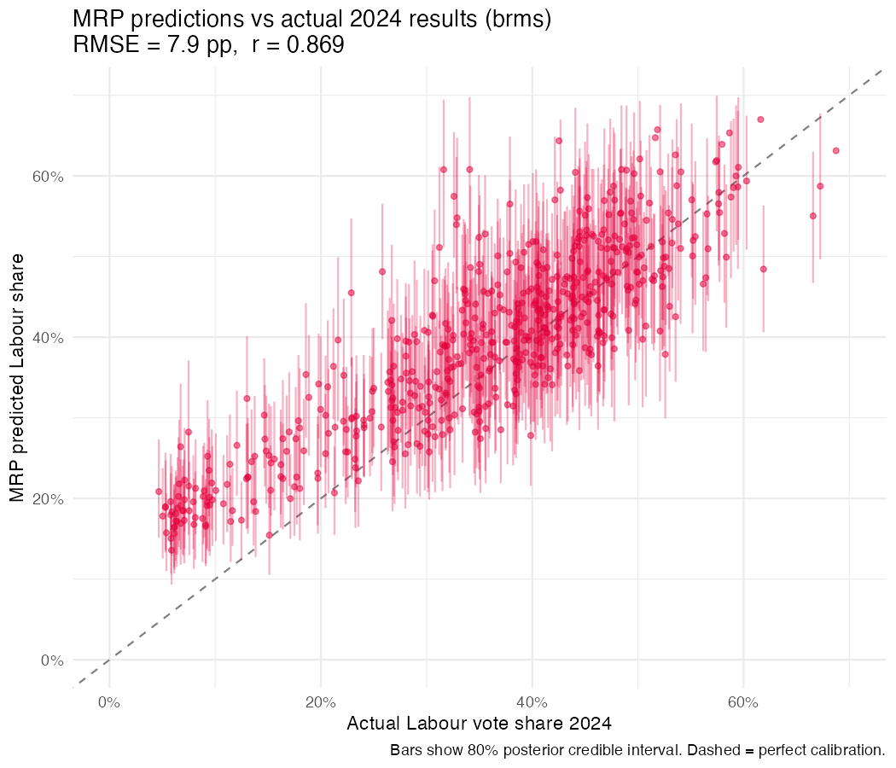

Multilevel regression with post-stratification (MRP) is the technique behind YouGov's seat-level polling — used to call the 2019 and 2024 elections more accurately than conventional polling. This project applies MRP to the British Election Study (BES) panel to estimate Labour vote share at constituency level across all 575 England & Wales constituencies, and validates those estimates against the actual 2024 General Election results.
Standard constituency polls cost £10,000–£20,000 each and would take millions to cover all 650 seats. MRP does it from a single national survey of ~10,000–30,000 respondents. The multilevel structure is crucial: it borrows strength across constituencies, so that even seats with few survey respondents get sensible estimates.
| Source | Detail |
|---|---|
| British Election Study panel | Waves 1–30, ~30,000 respondents, 2014–2024 |
| 2011 Census (ONS) | Constituency-level demographic margins for post-stratification |
| 2021 Census (ONS) | Updated margins for more recent waves |
| Electoral Commission | Actual 2024 GE results for validation |
Two implementations for comparison — both Bayesian, both producing posterior distributions over constituency vote shares:

| Page | What it shows |
|---|---|
| Constituency profiles | Interactive hex map of England & Wales; click any seat for MRP predictions vs actual results across all BES waves |
| Model comparison | brms vs bambi performance across metrics and waves |
| How MRP works | Visual explainer of the post-stratification mechanics |
| Swing deep dive | Constituency-level swing analysis across demographics |